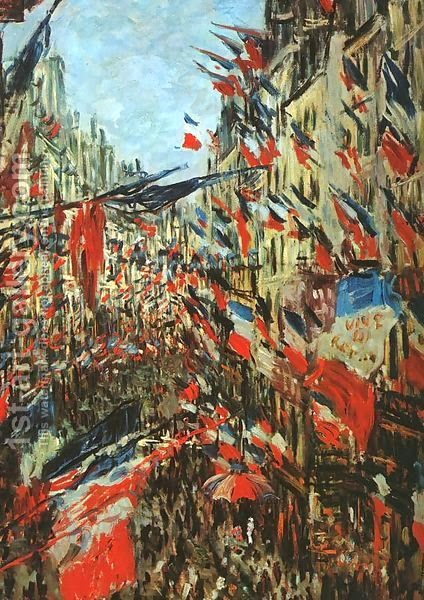

Yoma 68 - Waiting for the goat
The High Priest returned to the ox and the goat who were slaughtered before and were later to burned. He took out the sacrificial parts to be burned on the Altar, put them in the golden vessel, and braided the limbs of the two animals together. Others took them out to the burning place, carrying them on the pole, and dismembering before burning, but not removing the skin. They also had to purify themselves after performing this service.
Now the High Priest had to wait until the goat would arrive to its destination, which was twelve "mil" (about eight miles) away. How did they know? People would wave flags and see each other, one after the other, at each booth . Others say that he only had to go for three "mil", and that is where the rock was, and the time was estimated by his envoy returning and then walking for another "mil", thus walking for the total of three "mil". Rabbi Yishmael says that the red strip of wool would always become white once the goat reached the desert, and that is how they knew.
Art: Rue Montargueil with Flags by Claude Oscar Monet